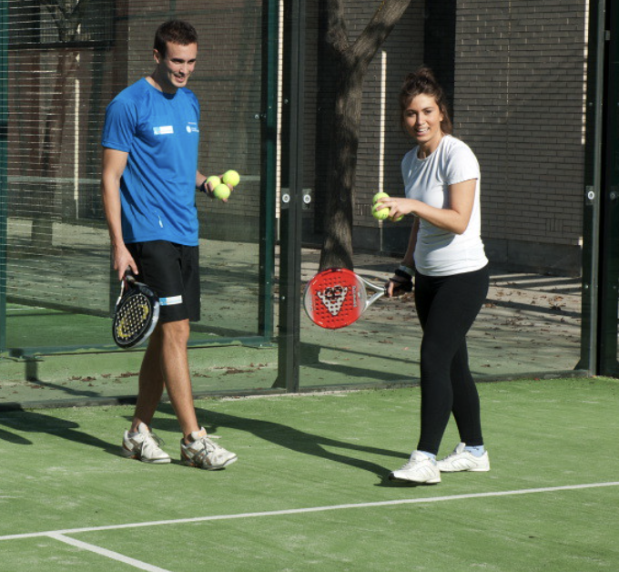
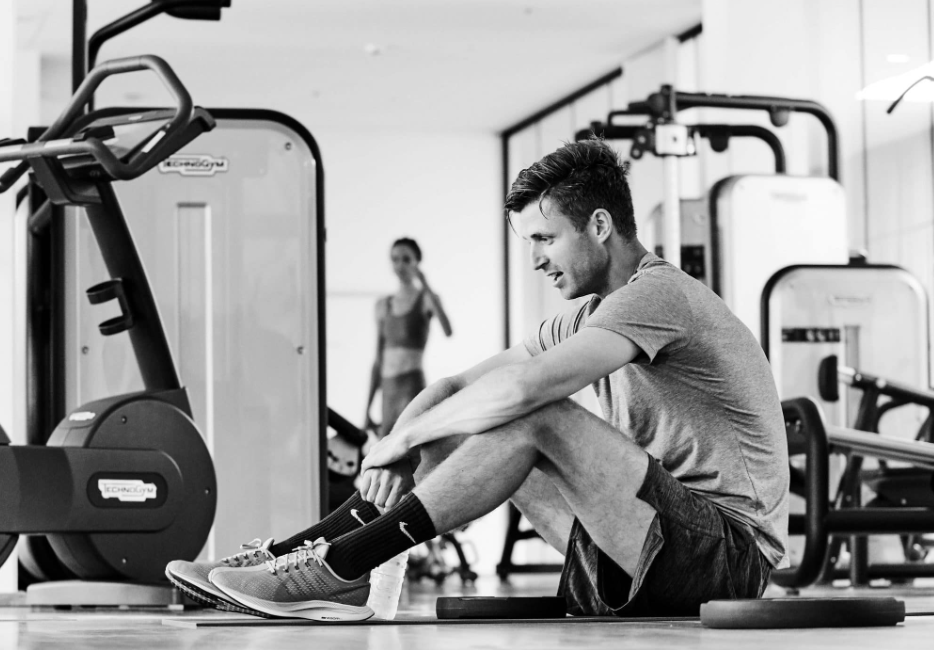

Motion behøver ikke at være kedeligt
Der er mange forskellige måder at få sin daglige motion på, og det behøver i den grad ikke være kedeligt.
Folk har forskellige holdninger til motion, og ikke alle er glade for at løbe eller cykle en tur.
Derfor kan det være en meget god idé at tage dine venner i hånden, dyrke motion og på samme tid dyrke dit sociale liv.
I en by som Aarhus hvor der virkelig er gang i studielivet, er der mange muligheder for at få en god og sjov omgang motion sammen med dine venner.
Padeltennis
Hvis du endnu ikke har prøvet padeltennis, er du med næsten 100% garanti gået glip af noget. En hurtigt voksende sport, som på grund af sin forholdsvis nemme tilgang, er blevet populær verden over. Padeltennis er nemt at tilgå som nybegynder, og man vil hurtigt få styr på sporten. Der er mange udbydere af padeltennis i byer rundt omkring i Danmark, hvis vi tager udgangspunkt i Aarhus, er der hele 7 steder du kan spille. Heriblandt Padelground, Padelclub og Match Padel.
Fitness
Er du ikke medlem af et fitnesscenter, kan det være en god start hvis du gerne vil begynde at være mere aktiv.
Uanset om du træner for at holde dig i form,
blive stærkere eller tabe dig vil der altid være plads til dig og eventuelt din træningspartner.
Her har du mulighed for at kunne lave forskellige former for motion, herunder styrketræning, løb, cykling osv.
Hvis du er til holdundervisning, vil der også være mulighed for det i næsten alle centre i Danmark.
De tilbyder en lang holdundervisning som fx kunne være dans, spinning, yoga og mange andre ting.